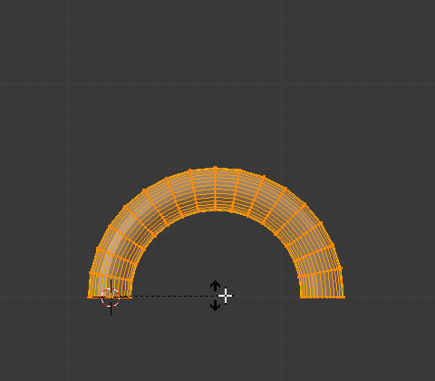

Згин -- Bend¶
Орієнтир -- Reference
| Режим: | Режими Об'єкта та Правки -- Object and Edit Modes |
|---|---|
| Меню: | «Об'єкт/Сіть/Крива/Поверхня > Трансформація > Згин» -- |
| Скорочення: | Shift-W |

Перед. |

Clamp вимкнуто. |
{kind=link}
{kind=link}
Цей інструмент обертає лінію виділених елементів, формуючи дугу між курсором миші та 3D курсором.
Використання¶
Засіб Blend може використовуватися у будь-якому випадку, коли ви хочете зігнути фігуру удвоє з поступовим переходом між двома частинами.
Це може зайняти деякий час, щоб звикнути, основи, перелічені нижче, працюють так:
- Початкові позиції курсорів визначають вісь згинання.
- Відстань від курсора миші до 3D курсора визначає те, наскільки різким буде згин.
- Відносний кут курсора миші до початкової осі визначає кут згину.
Якщо це здається надто складним, можливо, краще спробувати цей інструмент і тоді наочно швидко стане видимим те, як він реагує на ваш увід.
- Кут Згину -- Bend Angle
- Величина обертання.
- Радіус -- Radius
- Різкість згину.
- Затиск -- Clamp
Зазвичай дуга повертається на затиснений кут обертання з виділеними елементами, витягнутими уздовж дотичної лінії поза ним (дивіться вище зліва). Коли затиск дезактивовано, то дуга продовжує вирівнювати виділені елементи у коло (справа).
При не натиснутій Alt усі виділені елементи слідують по колу, навіть коли вони є поза сегментом між 3D курсором і вказівником миші.
Ghi chú
На відміну від більшості інших режим трансформації, на Bend не впливають опорна точка -- Pivot Point або Transform Orientation, завжди натомість використовується поточна Площина Огляду.
Gợi ý
Ви можете повернути кут згину на багато обертань, потенційно формуючи спіральну форму.

Приклад трансформації Bend.